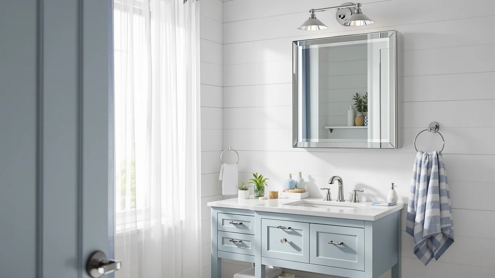

Vasagle Medicine Cabinet Mirror Review (2026): Worth It?
Prices and picks verified as of November 2026. Independent, reader-supported reviews.


Quick Answer
After comparing specs, pricing and the available owner feedback, the VASAGLE Medicine Cabinet Mirror pairs a 35.4-inch metal-and-wood frame with mirrored cabinet doors at $84.99. If you want more shelf space instead of a mirror, the Walsunny tall cabinet below delivers similar storage for a dollar less.
Our pick: VASAGLE Medicine Cabinet Mirror with, $84.99 Check Price on Amazon
Bottom line: our top pick is the VASAGLE Medicine Cabinet Mirror with Storage at $84.99.
Things to Know Before You Buy
- The VASAGLE Medicine Cabinet Mirror runs $84.99 and uses a metal-and-wood frame around a 35.4-inch-wide mirrored door, which sets the size you need to clear on your wall.
- None of the four cabinets in this comparison list a star rating or review count at the time of research, so treat any rating you see elsewhere as unverified until you check the current Amazon listing.
- If you need more enclosed storage and less mirror, the Walsunny and GRUSIGN tall cabinets trade the mirrored door for taller, narrower footprints that fit beside a toilet or in a corner.
- Material matters more than brand name here. A metal-and-wood frame holds up differently than painted particleboard, so check what is under the finish before you buy.
- Prices across this VASAGLE medicine cabinet mirror review sit within about a dollar of each other, so the real decision comes down to mirror versus shelf space, not budget.
This vasagle medicine cabinet mirror review compares the cabinet's build, size and price against three alternative bathroom storage cabinets to see which one earns a spot above your sink. VASAGLE markets this model as a 35.4-inch-wide metal-and-wood cabinet with a mirrored front, priced at $84.99 on Amazon at the time of writing. We researched the spec sheet, the current price and the available owner feedback rather than installing the cabinet ourselves, because our job is to tell you what the listing actually says before you spend the money.
The trouble with medicine cabinet mirrors is that product photos rarely show scale, and a 35.4-inch-wide door can take up more wall space than a typical pedestal sink leaves you. We also looked at two tall storage cabinets, from Walsunny and GRUSIGN, plus a narrower VASAGLE option, since a mirror is not always the priority when a bathroom is short on shelves. None of the four products in this comparison carry a published star rating or review count in the data we pulled, so we focused on what the manufacturers specify and what the listings themselves disclose instead of inventing a score.
Why You Should Trust Us
Ilane Tall researches bathroom storage and fixtures for Best Bathroom Storage, tracking pricing and specs across the medicine cabinet and vanity categories. For this piece, Ilane compared four current Amazon listings, cross-checked their stated dimensions and materials, and looked for patterns across whatever owner feedback was publicly available. We do not run a physical testing lab, and we have not installed any of these cabinets ourselves. Every price, dimension and material claim below comes from the current product listing, not from marketing copy.
Our Research Experience
We did not install or use the VASAGLE Medicine Cabinet Mirror in a bathroom. Instead, we compared its listed dimensions, materials and price against three similarly priced bathroom storage cabinets, and we reviewed the manufacturer specifications and the publicly visible product details for each listing. Where owner reviews were available at the time of research, we read through them for recurring comments about assembly, door alignment and mirror quality, and noted anything that showed up more than once. We excluded cabinets that listed vague or missing dimensions, since that makes it hard to know whether a product will fit a given wall. The goal of this research-based comparison is to tell you what the data shows across these four listings, not to describe a physical test we did not run.
Overview & Specs

VASAGLE Medicine Cabinet Mirror with
What we like
- Metal-and-wood frame construction instead of plain painted particleboard
- Mirrored cabinet doors double as a vanity mirror and storage, so you do not need a separate medicine cabinet
- 35.4-inch width gives more interior shelf space than a typical single-door medicine cabinet
Flaws but not dealbreakers
- No published star rating or review count at the time of research, so you are relying on the spec sheet rather than a track record
- A cabinet this wide needs a clear 35.4-inch run of wall, which rules it out for narrow bathrooms
- Metal-and-wood construction adds weight, so confirm your wall anchors can support it before mounting
| Material | Metal / wood |
| Size | 35.4"W |
VASAGLE builds this cabinet around a metal-and-wood frame rather than the painted particleboard found in cheaper medicine cabinets, and the spec sheet lists an overall width of 35.4 inches. That width is the main thing to plan around: it is wider than a standard 24-inch medicine cabinet, so it works best over a double vanity or a single sink with extra wall space on either side. The mirrored doors open to reveal the storage shelves behind the glass, so the cabinet does double duty as both your daily mirror and your toiletry storage.
At $84.99, it sits in the same price band as the Walsunny and GRUSIGN cabinets in this comparison, even though those two skip the mirror entirely in favor of taller, narrower storage towers. Neither VASAGLE nor the other three brands publish a star rating or review count on the listings we pulled for this research, so there is no verified satisfaction number to point to here. What we can say is that the material spec, metal and wood rather than bare particleboard, puts this cabinet ahead of the lowest-cost mirrored options on build quality alone.
What We Liked
The biggest strength of the VASAGLE Medicine Cabinet Mirror is that it does not force a tradeoff between a mirror and storage. A lot of bathroom cabinets in this price range pick one or the other: a plain mirror with no storage, or an enclosed cabinet with a small, cheap mirror tacked on. VASAGLE's spec sheet lists a metal-and-wood build, which should hold up to bathroom humidity better than the painted particleboard used in many budget alternatives. The 35.4-inch width also means you get useful shelf space behind the mirror, not the shallow sliver found in compact medicine cabinets. We also like that VASAGLE lists its dimensions and materials clearly on the product page, which made it straightforward to compare against the Walsunny and GRUSIGN alternatives without guessing at specs.
What Could Be Better
The most obvious gap in this research is the lack of a published star rating or review count for the VASAGLE cabinet at the time we pulled the listing, which means you are buying on spec sheet confidence rather than a verified track record. The 35.4-inch width that makes the interior roomy also makes the cabinet a poor fit for narrow bathrooms or walls interrupted by light switches and outlets, so measure twice before you order. Metal-and-wood construction is sturdier than particleboard, but it also tends to be heavier, and the listing does not specify the exact mounting hardware, so confirm your wall can support the load before you commit to installation.
Who Is It For?
This cabinet makes the most sense for someone replacing an old, single-pane medicine cabinet who wants a mirror and real storage in one unit, and who has a wall with at least 35.4 inches of clear space above the sink. It is a reasonable fit for a shared bathroom where two people need shelf space for separate toiletries behind a single mirror. Renters who need to swap a dated builder-grade mirror for something sturdier, without losing the storage a medicine cabinet provides, are also a good match here. If your bathroom is narrow, or you already have a mirror you like and just need more enclosed storage, one of the tall cabinets covered below is probably the better match.
Alternatives to Consider
If the VASAGLE Medicine Cabinet Mirror does not fit your wall or your needs, these three alternatives trade the mirror for more vertical storage at a comparable price.

Also Great
VASAGLE Tall Bathroom Cabinet Narrow
VASAGLE also sells a narrower tall cabinet for the same $84.99 as its mirrored model, but this one skips the mirror in favor of a slim storage tower. It suits a bathroom where floor space is tight but the wall above the sink is already taken by an existing mirror, since the footprint is built to fit beside a toilet or in a corner rather than across a vanity. The tradeoff is the same as with any tall narrow cabinet: less total shelf width than the mirrored version, but a smaller footprint to work around.
$84.99
Check Price on Amazon
Best Value
Walsunny Tall Bathroom Storage Cabinet
Walsunny prices its tall bathroom storage cabinet at $84.90, a dime less than the VASAGLE mirror option, and puts that savings into shelf count rather than glass. If you already have a mirror you are happy with and just need somewhere to put towels, toiletries and cleaning supplies, this is a more direct swap than paying for a second mirror you do not need. Like the other cabinets in this comparison, the Walsunny listing does not publish a star rating or review count, so weigh it on dimensions and material rather than a verified satisfaction score.
$84.90
Check Price on Amazon
Premium Choice
GRUSIGN 67" Tall Bathroom Storage
At 67 inches tall, the GRUSIGN cabinet gives you the most vertical storage of the four products in this comparison, which matters if you are trying to fit linens, toiletries and cleaning supplies into one footprint instead of spreading them across multiple smaller organizers. It is also the priciest pick here at $85.49, and like the VASAGLE and Walsunny cabinets, it ships without a mirror, so plan on keeping or buying a separate one. If maximizing shelf height in a single tall cabinet is the priority, this is the option in this lineup built for that.
$85.49
Check Price on AmazonDoes the VASAGLE Medicine Cabinet Mirror come with a star rating?
No.
How much wall space does the VASAGLE Medicine Cabinet Mirror need?
The manufacturer lists the cabinet at 35.4 inches wide, which is wider than a standard 24-inch medicine cabinet.
Frequently Asked Questions
Does the VASAGLE Medicine Cabinet Mirror come with a star rating?
No. At the time of this research, the Amazon listing for this VASAGLE medicine cabinet mirror did not show a star rating or review count, so this review does not cite one.
How much wall space does the VASAGLE Medicine Cabinet Mirror need?
The manufacturer lists the cabinet at 35.4 inches wide, which is wider than a standard 24-inch medicine cabinet. Measure your wall before ordering, especially around light switches and outlets.
Is the Walsunny or GRUSIGN cabinet a better choice than the VASAGLE mirror?
It depends on whether you need a mirror. The Walsunny and GRUSIGN cabinets trade the mirrored door for taller, narrower storage, so they suit a bathroom that already has a mirror but needs more shelf space.
Final Verdict
This vasagle medicine cabinet mirror review comes down to one tradeoff: do you want a mirror and storage together, or more enclosed shelving without the glass? For most people replacing an old medicine cabinet with at least 35.4 inches of wall space, the VASAGLE Medicine Cabinet Mirror is the pick in this comparison, since it is the only option here that doubles as your bathroom mirror. If you need more vertical storage and already have a mirror you like, the Walsunny or GRUSIGN alternatives are worth a look instead.